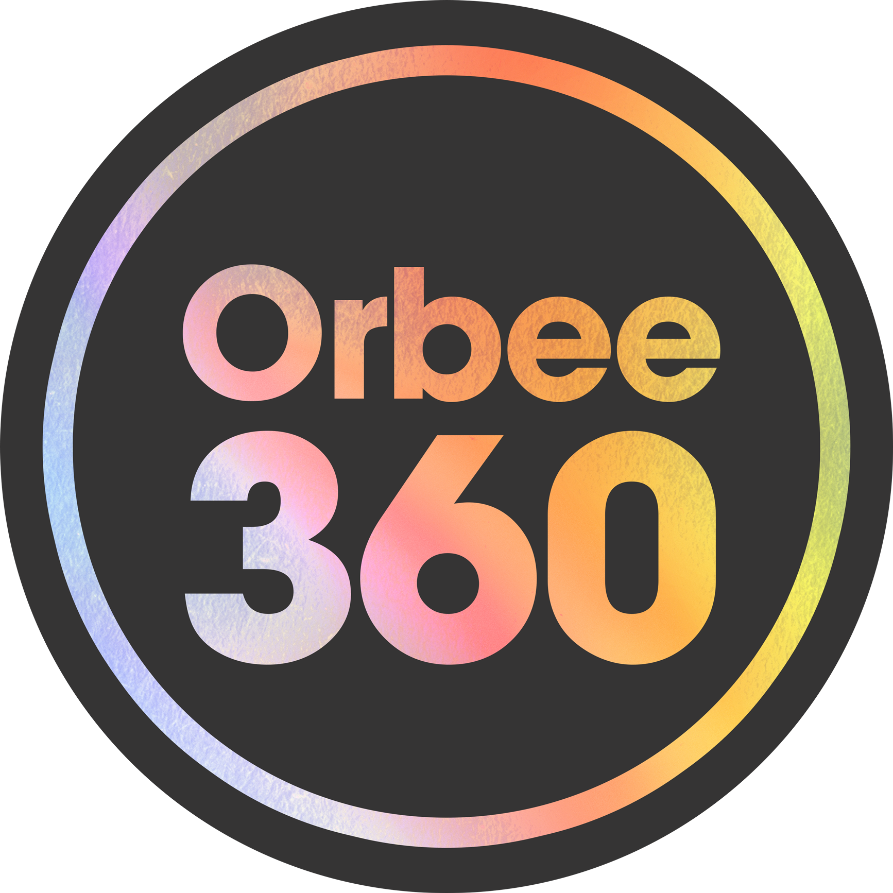
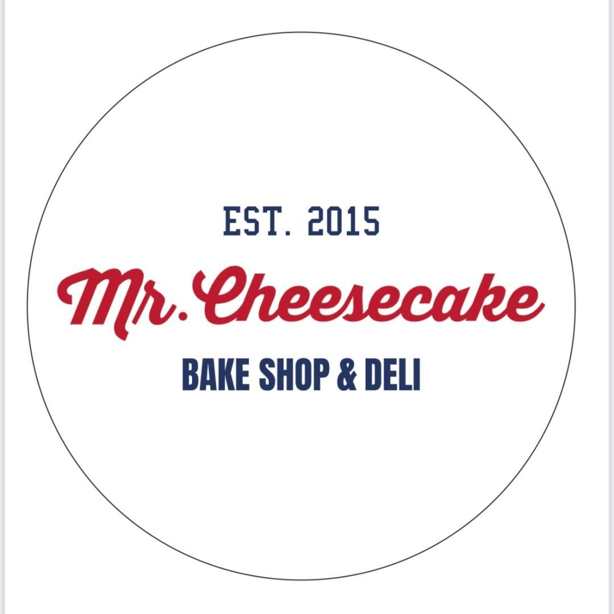
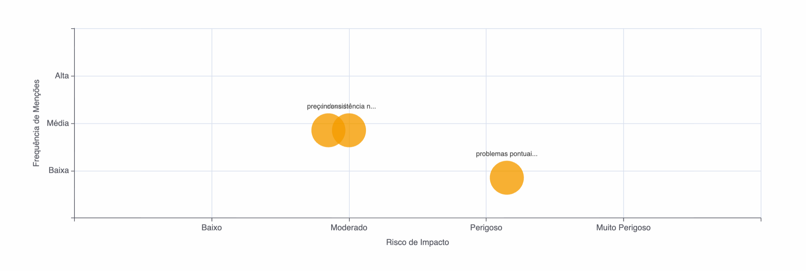
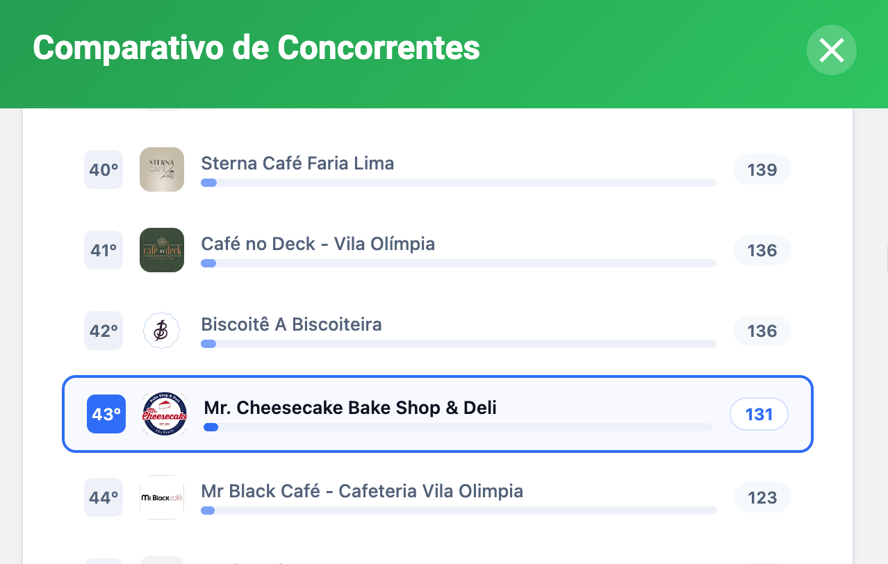

Mr. Cheesecake
Os primeiros 3 meses foram a fundação. Os próximos serão o domínio total do mercado local.


Relatório de Consolidação Trimestral - Orbee360
Março de 2026
Score de Otimização Google
↑ Iniciamos com 85 pontos
O perfil saiu de um estado "bom" para um estado de "Alta Performance", atingindo a pontuação máxima de otimização no algoritmo. Isso removeu todos os filtros e restrições de busca do Google, garantindo que o Mr. Cheesecake tenha máxima relevância e se destaque organicamente à frente dos concorrentes nas pesquisas locais da região.
99
Posts Publicados por Mês / Média
3
Quantidade de posts por dia / Média
100%
Posts com CTA
100%
Posts com Mídia
"Uma média de um post a cada 8 horas sinaliza ao Google relevância máxima. Mantivemos o Mr. Cheesecake 'quente' no algoritmo durante todo o trimestre."
Visualizações Totais
10.0K
Pico de buscas identificado aos Sábados.
Taxa de Interesse (CTR)
7.1%
A média do mercado é de 3% a 5%.
Nossa atração está acima da média.
Rotas (Visitas)
574
Pessoas que pediram direção até o Mr. Cheesecake.
Chamadas Diretas
82
Chamadas originadas pelo perfil.
Cliques no Site
137
Público qualificado buscando conhecer o Mr. Cheesecake.
Total de 793 Oportunidades de Venda geradas no período.
Preço Elevado
Pode gerar objeções de novos clientes ou percepções negativas.
Consistência no Tamanho das Porções
Falta de padronização nas fatias e porções entregues.

Temos um volume grande de pessoas clicando no link do perfil. No entanto, hoje estamos "vazando" autoridade. Precisamos converter esse clique em novas oportunidades de pedido direto e controlado.
86.3% Acessos Mobile
13.7% Acessos Desktop

Basta o cliente aproximar o celular no totem do balcão para abrir o Google Meu Negócio e fazer uma avaliação instantaneamente.
Coleta de feedback direto no Delivery para conquistar novas avaliações de clientes.
Páginas específicas para encomendas de cheesecakes e promoções da casa.
Estrutura de dados para buscadores de Inteligência Artificial.
Botão de WhatsApp, Cardápio e Promoções.
Os primeiros 3 meses foram a fundação. Os próximos serão o domínio total do mercado local.